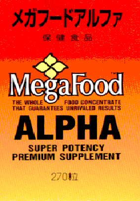
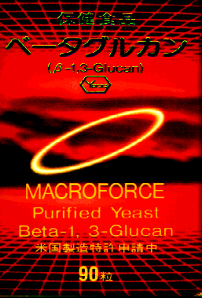
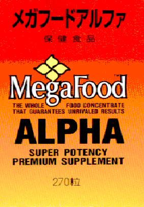
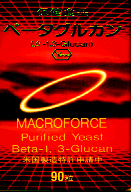

|

|
 |  |
| 新版 薬剤師がすすめる ビタミン・ミネラル のとり方 平成２２年１１月初版 丸善 1900円 |
薬剤師がすすめる ビタミン・ミネラル の使い方(第２版) 平成１３年１０月第２版 丸善 2700円 |
メガフードアルファ 総合ビタミンミネラル剤 270粒5800円 |
ベータグルカン 免疫の栄養 酵母食品 30カプセル7500円 100カプセル22500円 |
管理者の変更にともない、ホームページの移転を行いました。旧URL(http://www.fukui-pharma.com/)をブックマークされている方は、お手数ですが現在表示されているページをブックマークしなおしてください。(2017.6.25)
これまでご注文は、Eメール・電話・FAXで承っておりましたが、事情により、新規のお客様はメールのみとさせていただきます。従来からのお客様につきましては、引き続き電話・FAXでも承ります。
また、しばらくの間、宅配便のみの販売とさせていただきます。
ご不便をおかけいたしますが、今後とも当店をよろしくお願いいたします。(2017.6.25)
メールアドレス: fukui-pharma@2-b.jp
『新版 薬剤師がすすめるビタミン・ミネラルのとり方』
『薬剤師がすすめるビタミン・ミネラルの使い方(第2版)』
『症状改善のためのビタミン・ミネラルの摂り方』
○免疫の栄養、パン酵母成分 ベータグルカン(栄養補助食品)
○ベータグルカンとは
○マルチビタミンミネラル
メガフードアルファー(栄養補助食品)
○サプリメントの摂り方
|
|
|
 |  |
| 新版 薬剤師がすすめる ビタミン・ミネラル のとり方 平成２２年１１月初版 丸善 1900円 |
薬剤師がすすめる ビタミン・ミネラル の使い方(第２版) 平成１３年１０月第２版 丸善 2700円 |
メガフードアルファ 総合ビタミンミネラル剤 270粒5800円 |
ベータグルカン 免疫の栄養 酵母食品 30カプセル7500円 100カプセル22500円 |
1)活性酸素(フリーラジカル)が老化や成人病の原因に？
2)フリーラジカル及び活性酸素
3)体内抗酸化物質がなぜ消耗するのか
4)活性酸素の生成と消去の図表
5)分子で示す活性酸素の生成と変換
1)免疫とは、免疫を受け持つ細胞
2)血液中の細胞、図表
3)免疫低下の原因、免疫を高めるには
4)免疫の働きとビタミン
5)ヘルパーＴ１とヘルパーＴ２のバランス
6)Ｔh１を高めＴh２を抑える図表
7)免疫基本応答の図表
8)免疫応答の図表
9)ベータグルカンと免疫細胞及び図表
10)ウイルス感染免疫応答の経過図表
２００５世界らん展
1)日本大賞はデンドロビウム
2)パフィオペディラム１
3)パフィオペディラム２
4)パフィオペディラム３
5)カトレア１
6)カトレア２
7)リカステ
8)ファレノプシス
9)デンドロビウム
10)シンビ・マスダ・フラグ
２００４世界らん展
1)日本大賞は胡蝶蘭
2)カトレア１
3)カトレア２
4)パフィオペディラム１
5)パフィオペディラム２
6)ファレノプシス
7)デンドロビウム
8)リカステ
ぼたん
上野公園ぼたん展
バラ
日本橋高島屋バラ展
ハワイ旅行、マウイ島、オアフ島
1)マウイ島カアナパリのサンセット・虹・夕暮れ
2)オアフ島ハナウマ湾全景
3)オアフ島ワイキキビーチ・カラカウア通り
4)マウイ島カアナパリのバス、ホエールビレッジ前
5)マウイ島植物園バナナの花・しょうがの花
6)マウイ島水族館えい・熱帯魚
7)ワイキキビーチとマウイビーチ